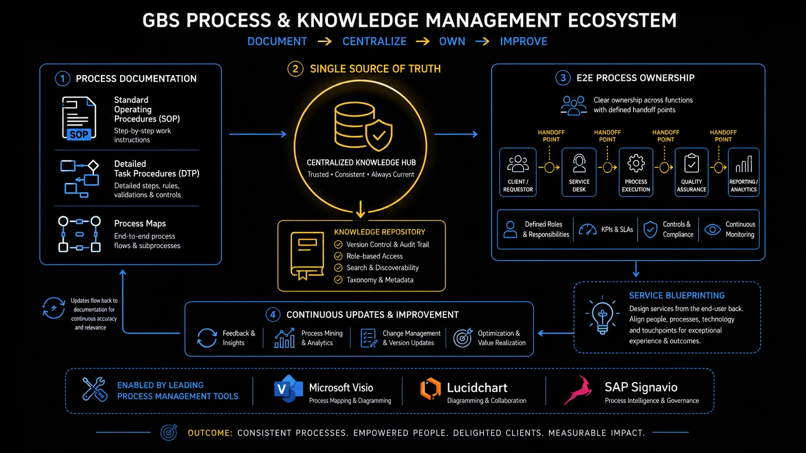

Process and Knowledge Management A process exists in documentation. Without it, you have a habit.
Every GBS center runs on documented processes. But how that documentation is structured, maintained, and governed separates the centers that scale from the ones that break when someone leaves.
Sound familiar?
 RYou run processes all day and call them a pile of tasks.T1 →
RYou run processes all day and call them a pile of tasks.T1 →
 PSomeone asks for "the documentation" and chaos follows.T2 →
PSomeone asks for "the documentation" and chaos follows.T2 →
 AYou know every click and none of the rules.T3 →
AYou know every click and none of the rules.T3 →
 KThree versions of the SOP. All outdated.T4 →
KThree versions of the SOP. All outdated.T4 →
 PYour local process change got reversed from above.T5 →
PYour local process change got reversed from above.T5 →
 AGreen dashboard, cold stakeholder.T7 →
AGreen dashboard, cold stakeholder.T7 →
 MSurvey scores collected, archived, forgotten.T8 →
MSurvey scores collected, archived, forgotten.T8 →
What a process is — and why managing it matters
Everything you touch in GBS is a process — inputs, steps, outputs, repeated. Knowing which ones deserve standardization is the starting skill. The model is in THE FIX.
You do not have tasks.
You have processes.
RRavi describes his job as "handling invoices." A process consultant asks him to walk through one.
Receive, validate, match, resolve, post — five steps, three systems, two decision points.
He had never seen his own work as a structure. Just as a pile.
"I run a process 40 times a day. I just called it my job."
He feels curious about work he thought he knew.
You execute steps without seeing the structure — and cannot improve what you cannot see.
A process is three parts, repeated — and repetition decides its treatment.
Ravi sketches his invoice flow in five boxes. The pile becomes a structure — and structures can be improved.
What a process is — in depth
Before you document anything, it helps to know what a process actually is, and why some are worth standardizing while others are left alone. This is the ground the rest of the cluster stands on.
What a process is
A process is a set of steps that turns inputs into an output for a customer. In GBS, that customer is usually another part of the business. Service delivery is the day-to-day work of running these processes reliably, at the agreed quality and speed.
Take invoice processing. The input is a supplier invoice. The steps are matching it to a purchase order, checking it, and posting it for payment. The output is a paid supplier and a clean record for the business. Every task you do sits inside a process like this, whether or not anyone has drawn it out.
What process management is, and why it matters
Managing a process means owning how it runs: agreeing the steps, measuring how well it performs, and improving it over time. That is different from doing the work. Doing the work is completing today’s invoices. Managing the process is making sure every invoice, by every person, is handled the same reliable way.
This matters because work that is not managed drifts. Each person settles into their own version, quality varies by who is on shift, and errors stay hidden because there is no agreed baseline to compare against. You cannot improve, automate, or audit a process you cannot see. Managing it is what makes it visible.
Standard processes, and why they matter
A standard process is one agreed way of doing the work, written down and followed by everyone on the team. It removes needless variation so the output is predictable, and frees people from re-deciding things that are already settled.
Standardized work trains new joiners faster and makes errors easier to spot. It is also the precondition for automation. A bot or an AI assistant can only take over a process that runs the same way every time. Work that changes from person to person cannot be automated, measured fairly, or signed off in an audit.
Harmonized processes, and why they matter
Harmonization takes standardization one level up. It aligns the same process across locations, entities, or teams so they all work the same way, while allowing the few local differences that are genuinely required, such as tax, legal, or currency rules.
Standardization happens within a team. Harmonization happens across the organization. It matters because a global process owner can only manage, measure, and improve a process that runs consistently across every hub. Five sites doing accounts payable five different ways cannot be reported on as one process, let alone improved as one.
Process maturity
Processes tend to move through stages as an organization invests in them. A simple way to picture it.
Knowing where a process sits tells you what to work on next. A fragmented process needs standardizing before it is worth automating — trying to automate chaos just makes faster chaos. Most of the documentation, ownership, and improvement topics in this cluster are the work of moving a process up these stages.
With that grounding in place, the next topics cover how you capture a process so it can be standardized and shared: the document layers, SOPs and DTPs, and the governance that keeps them alive.
Draw your most frequent task as boxes and arrows. Five minutes, one sheet.
Processes seen. Now the documents that describe them.
The three document layers — what they are and how they connect
Process documentation comes in three layers — map, SOP, DTP — from bird’s-eye to keystroke. Know which layer answers which question. The model is in THE FIX.
Three documents, one process.
Each answers a different question.
PPriya’s migration needs documentation. The receiving team asks for "the documents" — singular confusion follows.
She sorts it: the process map shows the flow, the SOP sets the rules, the DTP walks the keystrokes.
Three layers, three audiences, three levels of zoom.
"A manager reads the map. An auditor reads the SOP. A new joiner needs the DTP."
She feels orderly — and so does the handover.
You write one document trying to serve every reader — and serve none of them.
Three layers, three zoom levels.
Her handover package has all three layers, labeled. Every reader finds their altitude.
The three document layers in depth
Most GBS professionals use these documents every day without knowing their names. Understanding the hierarchy helps you know which document to look in — and which one to update.
Standard Operating Procedure — the "what and why"
The high-level blueprint for a process — the overview a new manager reads to understand it, not the step-by-step instructions for someone executing it.
- Describes what the process does and who is involved
- Captures inputs and outputs, systems used, and which controls apply
- Written for comprehension, not execution
Contains: process scope, inputs and outputs, process map (swimlane or flowchart), parties involved, systems used, controls and compliance references, exceptions.
Example: AP Invoice Processing SOP Shared with: auditors, new hires, BU stakeholdersDesktop Procedure — the "exactly how"
The step-by-step execution manual — written for the person performing the task, not the manager overseeing it. If an SOP is the recipe, the DTP is the photo-by-photo cooking guide.
- Includes screenshots and system navigation paths
- Field-by-field instructions and error-handling guidance
- Granular enough that a new joiner can execute without asking for help
Contains: numbered steps, screenshots, system navigation, error-handling instructions, keyboard shortcuts, approval routing paths.
Example: How to post an invoice in SAP — step 1 to step 24 Shared with: processors, new joiners during trainingControls and compliance references — the "guardrails"
The rules that cannot be broken — referenced in the SOP but may also exist as standalone documentation, especially in regulated or SOX-compliant environments.
- Segregation of duties requirements and approval thresholds
- Mandatory two-person sign-offs and regulatory deadlines
- Traceable to a control register and auditable on demand
Contains: control names and IDs, what triggers each control, who performs the control, evidence required for audit.
Example: Four-eyes approval for payments above €50,000 Referenced in: SOPs, audit workpapers, risk registersDocumentation layers — process maps, SOPs, DTPs
Check your process: do all three layers exist? Name the missing one.
Two of those layers get confused daily. SOP vs DTP, settled.

GBS process & knowledge management ecosystem: Document → Centralize → Own → Improve
SOP vs DTPDesktop Procedure — a step-by-step execution manual with screenshots, used by the person performing the task. More detailed than an SOP. — side by side
The SOP is the blueprint; the DTP is the execution manual with screenshots. Same process, different altitude, different reader. The model is in THE FIX.
Same process, two documents.
Stop confusing them.
ADay one, Amara learns her process from a DTP: every click, every screen, every field.
Month three, an auditor asks about controls and exceptions. The DTP has no answer — that lives in the SOP she never opened.
Two documents, one process, and she only knew half the pair.
"The DTP taught me the clicks. The SOP explains why the clicks exist."
She feels complete after reading both.
You learn the keystrokes and skip the rulebook — until a question arrives that keystrokes cannot answer.
One pair, cleanly split.
Amara reads the SOP behind her DTP. The next audit question gets an answer instead of a shrug.
SOP vs DTP in depth — side by side
The same process has two documents describing it. Here is what belongs in each.
Open the SOP behind your daily DTP. Find one rule the DTP never told you.
Documents written once. Kept alive is the harder part.
Governance: keeping documentation alive
Unmaintained documentation becomes a liability — failing audits and training people wrong. Ownership, review cycles, and one source fix it. The model is in THE FIX.
Three versions of the SOP.
All of them outdated.
KKlaudia needs the current SOP. She finds one on the shared drive, one in email, one on the team site.
All three differ. None match the process as it runs today.
A new joiner trained on version two last month. The auditor sampled version one.
"We do not have documentation. We have documentation archaeology."
She feels exasperated — at a fully preventable mess.
You treat documentation as a writing task. It is a maintenance contract — or it is decay.
Living documentation needs three mechanisms.
One owner, one home, one review date per document. The archaeology ends; the audit trail begins.
Documentation governance in depth
Documentation that is not maintained becomes a liability — not just an asset. An outdated SOP fails audits. An outdated DTP trains people incorrectly. The governance cycle is what prevents both.
Review triggered
Annual cycle or event-driven: system change, process redesign, audit finding, new regulation
›Team inputs collected
Processors flag what no longer matches reality. The best input comes from the people executing the work daily
›Update drafted
Process Owner or Senior Processor drafts changes. Screenshots refreshed. Controls references checked
›Reviewed and approved
GPO or Process Owner approves. For controls changes: Compliance or Internal Audit review may be required
›Published and trained
Updated document shared with the team. Brief retraining session held. Acknowledgment logged for audit trail
- Version control: is the document dated, versioned, and clearly showing what changed from the prior version?
- Approval evidence: is there a signature or system record showing who approved the current version?
- Training records: is there evidence that the team was trained on the current version — not an older one?
- Controls completeness: does the SOP reference all relevant controls? Are they traceable to the control register?
- Currency: does the document reflect how the process actually runs today — including any system changes since the last update?
- The best input for updating a DTP comes from the people using it every day. When a process changes, the processors know before the document does. Building a simple feedback mechanism — even a shared comment in the document itself — surfaces gaps faster than any top-down review cycle.
- An outdated DTP is not a neutral document. It is actively training new people incorrectly. In a high-turnover GBS environment, an unreviewed DTP from two system upgrades ago becomes the source of the errors that show up in your FPY metrics six months later.
- SOPs and DTPs should be in the same review cycle as each other — and the same cycle as the SLA review. If the process changes and the SLA target doesn't, or the SLA changes and the SOP isn't updated to reflect the new service definition, you have a governance gap.
Knowledge hub — centralized, searchable, governed
Find your process’s SOP copies. Kill all but one; make the rest links.
Governance per document. One role owns it per process — globally.
The Global Process OwnerGPO — Global Process Owner. Accountable for end-to-end process design, standardization, governance, and improvement across all GBS and business unit touchpoints for a given process. — what the role actually is
The Global Process Owner is accountable for one process end-to-end, across every hub — design, standards, improvement. Know yours. The model is in THE FIX.
Your process runs in four hubs.
One person owns its design.
PPeter’s team wants to change a process step. Site leadership approves. Two weeks later, the change is reversed.
The reversal comes from a role Peter had never dealt with: the Global Process Owner.
The process runs in four hubs — and local changes break global standards.
"We changed our copy of the process. The process has one owner, and it was not us."
He feels enlightened about a layer of the org he had only heard named.
You change your local slice of a global process and discover the owner by collision.
The GPO holds end-to-end accountability — three things follow.
Peter re-submits the change through the GPO — and it ships globally, with his team credited as origin.
The GPO role in depth
The GPO title sounds clear. In practice, what it means varies enormously by organization. Here is what the role should do — and the different ways it gets set up.
- Process design and standardization: defining how the process runs globally — the target operating model — and driving harmonization across regions and entities
- Documentation governance: ensuring SOPs and DTPs are current, approved, and accessible — the governance cycle described above is the GPO's responsibility to enforce
- Continuous improvement: identifying where the process underperforms, sponsoring improvement initiatives, and tracking the outcomes
- Change management for process changes: when the process design changes, the GPO owns the communication, retraining, and adoption — not just the updated document
- Metrics ownership: defining what KPIs the process should be measured by and ensuring the right data is captured to report them reliably
- Escalation point: when operations teams and BU stakeholders disagree about how a process should work, the GPO is the arbiter
Research by EY across 250+ client interviews identifies four main GPO setup models. Each has different reporting lines, authority levels, and operational intensity. No single model is universally correct. It depends on organizational structure and GBS maturity.
- GPO embedded in or reports to a business unit
- Strong connection to BU priorities and local context
- Risk: GBS operations teams may not feel the GPO's authority
- Common in early-stage or decentralized organizations
- GPO may be part-time, combined with a functional leadership role
- GPO sits within the function (Finance GPO inside Group Finance)
- Strong process expertise and functional credibility
- Dotted-line relationship to GBS operations teams
- Works well when the function retains significant process authority
- Common for F&A and HR processes in mid-maturity organizations
- GPO sits within the GBS organization itself
- Direct authority over GBS operations teams
- Clear accountability — one owner for design and delivery
- Requires GPO to maintain strong BU relationships despite reporting into GBS
- Common in mature, well-established GBS organizations
- GPO reports directly to C-level (CEO, COO, or CFO)
- Highest authority — can drive standardization across all BUs and GBS
- Required for true enterprise-wide process harmonization
- Rare — most common in organizations with strong centralization mandates
- Best-practice model per Genpact and EY research
GPO engagement is not constant. During stable operations the GPO plays a lighter governance role. During major transformation, migration, or tool deployment, the GPO becomes a central driving force. The intensity of the role follows the change curve.
The GPO title frequently exceeds the authority granted.
- A GPO with no solid-line to operations, no budget, and no dedicated time cannot drive the standardization the role requires
- Research shows the most effective GPOs have direct accountability to senior leadership — not just a dotted-line to GBS
- Without real authority, the GPO becomes a process documentarian rather than a process owner
End-to-end ownership — GPO accountability model
Find out who owns your process globally. One name. Write it down.
Processes owned. Services get a menu.
The service catalog — GBS's menu of services
The service catalog is GBS’s menu: what is offered, to whom, on what terms. Twelve services stop being folklore when they are written down. The model is in THE FIX.
Twelve services, zero menu.
Stakeholders order off-card anyway.
MMiguel inherits a team delivering "about twelve" services. Nobody can list them precisely — including the stakeholders consuming them.
He writes the menu: each service named, described, scoped, with its turnaround and its consumer.
Two surprises: one service nobody remembered promising, one delivered for a team that no longer exists.
"You cannot manage a menu that lives in people’s heads."
He feels clear-eyed about what his team actually is.
You deliver services from memory — and scope, demand, and credit all leak.
A catalog entry is four lines per service.
The dead service retires; the forgotten one gets terms. Demand finally has a front door.
The service catalog in depth — the menu model
Think of the service catalog as the GBS equivalent of a restaurant menu. It tells stakeholders what is available, what is not, who can order it, and what standard comes with it.
- Service name and description: plain-language explanation of what the service does — not internal process jargon
- Scope and eligibility: which business units, entities, or geographies can use this service
- What is included — and explicitly excluded: the service boundary. What GBS will do and what remains with the business
- Inputs required from the business: what the business must provide for GBS to execute — data formats, approval chains, timing
- Deliverables and outputs: what GBS will return — reports, processed transactions, resolved queries
- Performance standards: the SLA metrics and targets that apply to this service
- Escalation and exception handling: who to contact, and through what channel, when something falls outside standard
- Cost or allocation model (if applicable): how the service is charged to the business unit, if a chargeback model is in place
Onboarding new processes
When a new process is migrated to GBS, the service catalog entry sets expectations before anyone starts working. It is the shared reference for what was agreed.
Managing stakeholder expectations
When a BU asks for something GBS doesn't do, the catalog is the objective reference. "That isn't in our service catalog" is cleaner than "we don't do that."
Resolving scope conflicts
When GBS and a BU disagree about who is responsible for something, the catalog — combined with the SLA — is the primary evidence. Undocumented scope is always disputed scope.
List your team’s services from memory, then verify. The gaps are the finding.
The menu says what you serve. XLAs ask how it tasted.
XLAs — measuring how the service feels, not just how it performs
SLAs measure whether targets were hit; XLAs measure how the service felt to receive. Green SLAs with unhappy customers is the gap XLAs close. The model is in THE FIX.
The SLA was green.
The customer was still cold.
AAmara’s dashboard: 96% on-time, targets met, everything green.
Her stakeholder’s reality: chasing updates, re-explaining context to every new handler, effort on their side the SLA never counts.
Compliant service. Poor experience. Both true at once.
"We measured our promise. Nobody measured their experience."
She feels unsettled by a green that lies.
You defend the SLA while the stakeholder describes the experience — two conversations passing in the dark.
XLAs add the receiving side to the measurement.
One experience question joins the scorecard. The dashboard starts telling the whole truth.
XLAs in depth — experience-level agreements
SLAs measure whether GBS hit its targets. XLAs measure whether the people receiving the service actually had a good experience. These are not the same thing.
Service Level Agreement
- Measures technical performance: response time, accuracy rate, turnaround time
- Binary — either the target was hit or it wasn't
- Does not capture how easy the service was to use
- Does not capture how the business felt about the interaction
- A ticket answered in 24 hours but unhelpfully is SLA-compliant but experience-poor
- The floor — necessary but not sufficient
Experience Level Agreement
- Measures the end-user's perception: satisfaction, ease of use, emotional response
- Captured through surveys, sentiment analysis, and structured feedback
- Surfaces the gaps that KPIs cannot see — effort required, interaction quality
- Used alongside SLAs, not instead of them
- Originated in IT service management (ITSM/ITIL4) — now expanding into GBS
- Still rare in GBS practice — but gaining traction in mature organizations
- Short pulse surveys sent to service recipients after key interactions — not annual exercises that nobody reads
- Questions designed around outcomes ("Did this resolve your issue?") not process steps ("How would you rate our response time?")
- Results shared with the GBS team — not just management — so the people delivering the service understand how it is being received
- Results used for improvement, not for blame. A low XLA score is a signal to investigate, not a disciplinary trigger
- Discussed in service review meetings alongside SLA data — giving both the quantitative and qualitative view of performance
Ask one stakeholder: "How much effort does working with us cost you?" Log the answer next to your SLA.
Experience measured once is a snapshot. Surveys make it a signal.
Feedback and satisfaction surveys — doing it right
Surveys build trust or destroy it depending on one thing: whether anything visibly changes. Scores are the start; comments and follow-through are the value. The model is in THE FIX.
They filled in the survey.
Then watched nothing change.
MMiguel inherits last year’s stakeholder survey: decent scores, twenty written comments, zero follow-up actions.
This year’s response rate is half. The message was received: feedback goes nowhere here.
He runs it differently — reads every comment, picks three fixes, and reports back what changed.
"The survey is a promise. Answering it costs them trust — spend it on something."
He feels accountable to twenty comments nobody had answered.
You collect feedback and archive it — training everyone that honesty here is wasted effort.
Feedback that builds trust runs a closed loop.
Response rates recover the following cycle — because this time, answering did something.
Feedback and satisfaction surveys in depth
Whether called NPS, CES, or just "the annual survey" — asking for feedback is necessary. How it is designed and used determines whether it builds or damages the service relationship.
- Ask what the business actually cares about: not what is easy for GBS to measure. If the business is frustrated by query resolution quality, asking about turnaround time misses the point
- Keep it short: 3–5 focused questions get higher response rates than 20-question forms. The goal is signal, not data volume
- Make results visible to the team: sharing results only with management creates a feedback loop that never reaches the people who can act on it. Teams that see their own results improve faster
- Discuss outcomes — do not just report them: a survey result that is presented in a meeting and then filed away changes nothing. Outcomes need to become actions with owners and deadlines
- Design for improvement, not vindication: a survey designed to prove GBS is performing well will produce results that confirm that — and miss the real gaps. Design it to find the friction
- Protect the relationship: surveys can damage the service relationship if used for retaliation, blame, or creating adversarial dynamics between GBS and the business. The survey is a tool for getting better — not for settling scores
- NPS was designed for B2C customer loyalty — it translates imperfectly to GBS. Asking an internal finance team "how likely are you to recommend AP processing to a colleague?" is odd. What matters in GBS is effort (how hard was it to get this done?) and outcome (did the service solve the problem?). Customer Effort Score is often more meaningful for internal service contexts than NPS.
- The survey result is not the insight — the conversation about the survey result is. A score without a discussion about what drove it produces no action. Build the debrief into the process.
- If you are a GBS analyst or specialist: survey results that land on your team are feedback about your work. Treat them as developmental data, not as criticism. The organizations that improve fastest are the ones where front-line teams can hear and act on feedback without it becoming political.
Find last cycle’s comments. Pick one fix. Tell the commenters it happened.
Cluster complete. Cluster 2: the frameworks that run the services.
- In every GBS team, there is one person who knows everything and never writes it down. That person is a hero today and a single point of failure tomorrow. If you become the person who documents what they know, you become indispensable — and promotable.
- SOPs are not bureaucracy. They are the difference between "we can scale this process to 3 new hubs" and "we need 6 months to figure out how it works." The teams with clean documentation move faster on every transition, every audit, and every new hire ramp-up.
Key terms in this cluster
Underlined terms throughout this page link here. Full cross-pillar glossary at the GBS Insider Club Field Guide glossary.
- EY — The Future of Global Process Owners: Enabling the Next Wave of GBS (2024)
- Genpact — World-Class Processes Start with the Right Global Process Owners
- SSON — Global Process Owner (GPO) — Definition and Practice
- LinkedIn / Van den Kieboom — Are You a Global Process Owner or a Global Problem Owner?
- Ivanti — What Are Experience Level Agreements? XLAs vs SLAs
- HappySignals — Practical Guide to XLAs: What are IT Experience Level Agreements?
- AGOS Asia — Beyond SLAs: Why XLAs Are the Future of GBS Performance
- BOC Group — Process Documentation vs. Standard Operating Procedures
- Synfiny Advisors — The Global Business Services Organization Design in More Detail
- Peeriosity — Defining the Responsibilities of Global Process Owners (GPO)
- ✓ Document layers — SOP (what), DTP (how), controls (guardrails)
- ✓ Documentation governance cycle — review, update, approve, train, repeat
- ✓ Global Process Owner — four setup models, engagement vs. change curve
- ✓ Service catalog — what it contains and when it matters most
- ✓ XLAs — experience measurement beyond SLA metrics
- → Service Management — ITIL, COBIT, service transitions — Cluster 2
Want the full breakdown on video?
Process and knowledge management in GBS covered in depth on the GBS Insider Club YouTube channel.
▶ Subscribe on YouTubeKnowing the frameworks is the entry ticket. Applying them — visibly, at your actual job — is what gets you promoted.
The GBS Insider Club Career Paths turn this theory into a guided 90-day program for your role: self-assessment, practical exercises, templates, and Julian's unfiltered practitioner playbook.
Explore the Career Paths → Back to Operational Excellence